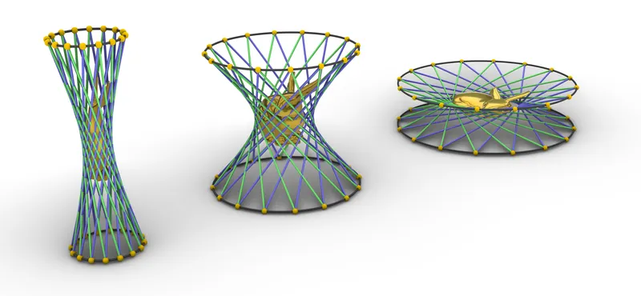
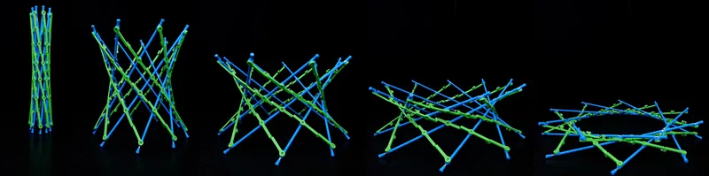

Hyperboloid Models
With Jürgen Richter-Gebert, Henry Segerman and Sabetta Matsumoto
A curved surface made only of straight sticks, joined wherever they meet – and yet the model moves.
A Model That Should Be Rigid
A hyperboloid of one sheet is curved, yet it consists entirely of straight lines – in two ways at once: through every point of the surface pass two lines, one from each of its two rulings. In 1873, Olaus Henrici asked a student to build such a surface from sticks, tied together with thread where they cross. With so many joints, he expected the model to “soon become rigid”. Instead, it moved: it folds flat in one direction and becomes tall and narrow in the other.
Arthur Cayley proved in 1879 that the ideal model really does move, in a proof of only two pages. His idea was not to solve the equations of the mechanism but to deform the whole surrounding space: a family of deformations changes the shape of the hyperboloid while every distance along its lines stays the same. The sticks can follow – and so can a rabbit sitting inside.

Sticks That Pass Through Each Other
Real sticks have a thickness, so two of them cannot meet in a single point. Most models therefore let the sticks bend a little – and the bending limits how far they can move. A new kind of joint, found by Sabetta Matsumoto and Eric Vergo, avoids this: the sticks of both rulings lie on the same hyperboloid. One ruling consists of sticks; the other is a chain of 3D-printed parts, linked by hinges whose axes all pass through the points where the ideal lines meet. With nothing to bend, the model moves equally freely through its whole range.

The positions of the joints along each stick can be read off a flat drawing. For the elliptical model below, this drawing is a Poncelet polygon – a star polygon inscribed in one conic and circumscribed around another.